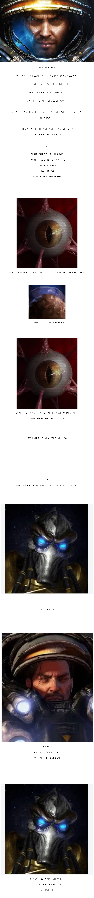
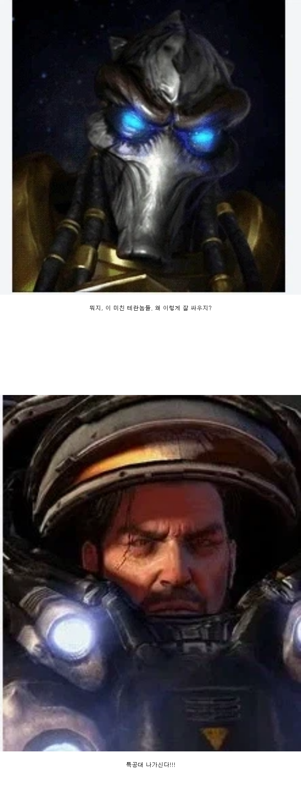

https://bbs.ruliweb.com/best/board/300143/read/76680947


토스랑 저그가 다른 테란들은 다 무시해도 레이너만은 무시 못하는 이유 ㅋㅋㅋㅋㅋ
https://bbs.ruliweb.com/best/board/300143/read/76680947


토스랑 저그가 다른 테란들은 다 무시해도 레이너만은 무시 못하는 이유 ㅋㅋㅋㅋㅋ
심지어 스타 1시절의 업적빼고도 2에서만 봐도 어마무시하긴 해
자날 기준
1.황금함대 지휘관 셀렌디스로부터 헤이븐 구출(정사루트)
2.탈다림이 수호하던 젤나가 유물부터 테라진가스까지 회수하면서 탈다림 박살
3.탈옥도 불가능하고 외부 침입도 불가능하다는 뉴 폴섬을 털어 악령 구출(정사루트)
4.발할라에서 비밀개발중인 오딘 탈취 후 코랄의 UNN기지에 잠입하여 멩스크의 죄악이 담긴 녹취록 폭로
(코푸룰루를 가질 수 없다면 차라리 잿더미로 만들어버릴테다!!)
5.자치령 함대 절반 끌고오면서 차행성으로 꼴박하는 워필드와 달리
소수병력으로 차행성 중심지 착륙 후 자치령 병력 구출 및 워필드 구출
6.차 행성 궤도정거장의 저그 군락지 파괴(스탯먼이 벨시르 실종된게 정사라면 이쪽이 정사루트)
7.차행성에 중추석 유물로 캐리건 정화성공
군심 기준
1.우모자를 공격하는 테란 자치령의 특수부대로부터 탈출(호너랑 발레리안 기준)
2.코푸룰루 구역의 가장 정신나감+실력 좋은 용병 미라 한으로부터 올란 대령 구출 및 기지 파괴
3.수도 아우구스트그라드에서 저그 피해로 부터 민간인 사수 및 자치령 부대 견제(엔딩 미션)
공허의 유산 기준
1.아몬과 혼종에 의해 지배당한 뫼비우스 특전대의 기습으로부터 아르타니스의 함대가 올때까지 계속 존버
2.혼종의 정신파동으로 마비가 걸리는 패널티에도 불구하고 베넷 항구로부터 탈출하려던 혼종과 뫼비우스 특전대 견제
3.캐리건이 젤나가 변태하는 동안 아몬의 총공세로부터 존버...
사실상 테란이 낳은 최고의 현장지휘관이 레이너 선생님임
수완이좋으시군요 제임스 레이너
그야말로 영웅에 걸맞는 위업
레이너가 대단하기는 한지, 스2에서 그 커다란 정화 모선을 마음대로 파괴해버렸는데 프로토스 측이 순순히 넘어감ㅋㅋㅋㅋㅋㅋㅋ
졌는데 프로토스입장에서도 졌잘싸를 만든.....
솔직히 타이커스도 레이너랑 동급이거나 그 이상인데 주인공 버프때문에 억지로 당해줬지
애초에 멩스크에게 목숨줄 잡혀있는 스토리라.....
타이커스까지 자유롭게 합류했으면 소설 천국의 악마들처럼 걍 발레리안없이 다 박살내고다녔을듯.

'주인공' 버프
역대 SF 미디어 속 최고의 함대 지휘관을 꼽으라면 양 웬리랑 얘 중에서 갈릴듯
주인공 버프 존나 세게 먹긴했음 ㅋㅋㅋㅋ 전략전술 이런게 아니라 순수무력이 말이 안됨 ㅋㅋㅋㅋ
유닛 공격력 자체가 높든데
테란 한마리를 조심하라고?